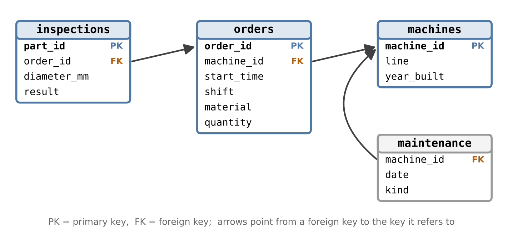

In the chapters of this script, data arrive as files: a table from a repository, a raw text file from a weather service. In a company, engineering data usually live somewhere else – in databases:
process data in a historian, a database specialised in time series from the control system,
quality and order data in a manufacturing execution system (MES) or an enterprise resource planning system (ERP),
test results in a laboratory database.
If you start a data science project in a company, you will therefore often get access to a database rather than a file. To find, combine and extract the data you need, you have to speak the language of databases: SQL (Structured Query Language). This appendix teaches the small part of SQL that covers most everyday needs – reading data – and shows how SQL and pandas fit together. No previous knowledge of databases is required.
Guiding question
A production line has six machines that turn shafts. Every part is inspected and either accepted (OK) or scrapped. The production manager asks: “Which machine has the highest scrap rate – and does it depend on the shift?” The answer is in the company database, spread over several tables.
Learning goals. After this appendix you can
explain how a relational database stores data in tables linked by keys,
read data with the SQL commands SELECT, WHERE, GROUP BY and JOIN,
name the pandas counterpart of each command,
load the result of a query into a pandas DataFrame,
avoid typical pitfalls: duplicated rows after a join, missing values (NULL), time stamps.
B.1 Tables, keys and relations
A relational database stores data in tables. Each table follows the rules of tidy data from Chapter 1: one row per observation, one column per variable, one value per cell. The key idea is to use one table per kind of observational unit and to link the tables instead of repeating information.
Our production database has four tables:
Table
One row per …
Columns (selection)
machines
machine
machine_id, line, year_built
orders
production order
order_id, machine_id, start_time, shift, material
inspections
inspected part
part_id, order_id, diameter_mm, result
maintenance
maintenance event
machine_id, date, kind (used in the pitfalls below)
Instead of writing the machine’s line and year into every one of thousands of inspection rows, each inspection only stores its order_id, and each order stores its machine_id. If a machine is moved to another line, one row has to be changed – not thousands.
Definition: Primary key and foreign key
A primary key identifies each row of a table uniquely, e.g. machine_id in machines. A foreign key is a column that refers to the primary key of another table, e.g. machine_id in orders. Foreign keys are the links along which tables are combined.

Figure B.1: Tables of the production database and their links. Each arrow points from a foreign key to the primary key it refers to.
We use SQLite, a database that consists of a single file, needs no server and is part of every Python installation. It works locally and in Google Colab. The following cell creates the example database; how it is created is not important here – in practice, the database already exists and you only read from it.
Code
# Create the example database production.db (simulated data; in practice the database exists already)import sqlite3from pathlib import Pathimport numpy as npimport pandas as pddef create_production_db(path="data/production.db", seed=1): rng = np.random.default_rng(seed) Path(path).parent.mkdir(exist_ok=True) Path(path).unlink(missing_ok=True) machines = pd.DataFrame({"machine_id": ["M1", "M2", "M3", "M4", "M5", "M6"],"line": ["A", "A", "A", "B", "B", "B"],"year_built": [2019, 2019, 2015, 2008, 2021, 2015], }) base_scrap = {"M1": 0.02, "M2": 0.025, "M3": 0.03, "M4": 0.07, "M5": 0.015, "M6": 0.03} shift_factor = {"early": 1.0, "late": 1.1, "night": 1.5}# orders start at 06:00, 14:00 and 22:00 local time (05:00, 13:00, 21:00 UTC in winter) starts = pd.date_range("2025-01-06 05:00", "2025-03-28 21:00", freq="8h", tz="UTC") shift_of = {5: "early", 13: "late", 21: "night"} orders, parts = [], [] order_id, part_id =1000, 1for t in starts: shift = shift_of[t.hour]for m in machines["machine_id"]:if rng.random() <0.15: # machine idle in this shiftcontinue material =str(rng.choice(["C45", "42CrMo4"], p=[0.7, 0.3])) n =int(rng.integers(20, 60)) orders.append((order_id, m, t.strftime("%Y-%m-%d %H:%M:%S"), shift, material, n)) p = base_scrap[m] * shift_factor[shift] * (1.3if material =="42CrMo4"else1.0)if rng.random() >0.03: # a few orders were never inspectedfor _ inrange(n): scrap = rng.random() < p diam = rng.normal(25.0, 0.04if scrap else0.01)if rng.random() <0.02: diam =None# diameter not recorded parts.append((part_id, order_id, diam, "scrap"if scrap else"OK")) part_id +=1 order_id +=1 maintenance = pd.DataFrame({"machine_id": ["M1", "M3", "M4", "M4", "M4", "M6"],"date": ["2025-01-20", "2025-02-03", "2025-01-13", "2025-02-10", "2025-03-10", "2025-03-03"],"kind": ["inspection", "repair", "repair", "repair", "inspection", "inspection"], })with sqlite3.connect(path) as con: con.execute("CREATE TABLE machines (machine_id TEXT PRIMARY KEY, line TEXT, year_built INTEGER)") con.execute("""CREATE TABLE orders (order_id INTEGER PRIMARY KEY, machine_id TEXT REFERENCES machines, start_time TEXT, shift TEXT, material TEXT, quantity INTEGER)""") con.execute("""CREATE TABLE inspections (part_id INTEGER PRIMARY KEY, order_id INTEGER REFERENCES orders, diameter_mm REAL, result TEXT)""") con.execute("CREATE TABLE maintenance (machine_id TEXT REFERENCES machines, date TEXT, kind TEXT)") con.executemany("INSERT INTO machines VALUES (?, ?, ?)", machines.itertuples(index=False)) con.executemany("INSERT INTO orders VALUES (?, ?, ?, ?, ?, ?)", orders) con.executemany("INSERT INTO inspections VALUES (?, ?, ?, ?)", parts) con.executemany("INSERT INTO maintenance VALUES (?, ?, ?)", maintenance.itertuples(index=False))return pathdb_path = create_production_db()
B.2 Reading data: SELECT … FROM
A database query is a short sentence in SQL. pd.read_sql sends it to the database and returns the result as a DataFrame. We open a connection once and use it for all queries:
con = sqlite3.connect(db_path) # connection to the database filepd.read_sql("SELECT * FROM machines", con) # all columns (*) of the table machines
machine_id
line
year_built
0
M1
A
2019
1
M2
A
2019
2
M3
A
2015
3
M4
B
2008
4
M5
B
2021
5
M6
B
2015
SELECT names the columns, FROM the table. SQL keywords are written in capitals by convention; SQL itself does not care. Large tables should not be read completely – LIMIT shows only the first rows, and COUNT(*) counts them:
print(pd.read_sql("SELECT COUNT(*) AS n_parts FROM inspections", con))pd.read_sql("SELECT order_id, machine_id, start_time, shift FROM orders LIMIT 5", con)
n_parts
0 47583
order_id
machine_id
start_time
shift
0
1000
M1
2025-01-06 05:00:00
early
1
1001
M2
2025-01-06 05:00:00
early
2
1002
M3
2025-01-06 05:00:00
early
3
1003
M4
2025-01-06 05:00:00
early
4
1004
M5
2025-01-06 05:00:00
early
B.3 Selecting rows: WHERE
WHERE keeps only the rows that satisfy a condition. Conditions can be combined with AND and OR; text values are written in single quotes.
Both give the same result. The difference: with WHERE, the database does the filtering and only the selected rows travel to Python. For a table with millions of rows, this is the difference between seconds and minutes.
B.4 Summarising: GROUP BY
GROUP BY forms groups of rows with the same value and computes one summary per group – like groupby in pandas. Typical summaries are COUNT, SUM, AVG, MIN and MAX.
query ="""SELECT result, COUNT(*) AS n_partsFROM inspectionsGROUP BY result"""pd.read_sql(query, con)
result
n_parts
0
OK
45607
1
scrap
1976
For the scrap rate we need the share of scrapped parts. A comparison such as result = 'scrap' is 1 if true and 0 if false, so its average is exactly the scrap rate. (This short form works in SQLite; other databases need AVG(CASE WHEN result = 'scrap' THEN 1.0 ELSE 0 END).)
query ="""SELECT order_id, COUNT(*) AS n_parts, AVG(result = 'scrap') AS scrap_rateFROM inspectionsGROUP BY order_id"""per_order = pd.read_sql(query, con)per_order.head()
order_id
n_parts
scrap_rate
0
1000
21
0.000000
1
1001
25
0.000000
2
1002
51
0.058824
3
1003
41
0.073171
4
1004
20
0.000000
This gives the scrap rate per order. But the question was about machines and shifts – and these are not in the table inspections. We have to combine tables.
B.5 Combining tables: JOIN
JOIN puts rows of two tables side by side wherever the keys match. We link each inspected part to its order (via order_id) and each order to its machine (via machine_id):
query ="""SELECT m.machine_id, m.year_built, COUNT(*) AS n_parts, AVG(i.result = 'scrap') AS scrap_rateFROM inspections AS iJOIN orders AS o ON i.order_id = o.order_idJOIN machines AS m ON o.machine_id = m.machine_idGROUP BY m.machine_id, m.year_builtORDER BY scrap_rate DESC"""per_machine = pd.read_sql(query, con)per_machine.round(3)
machine_id
year_built
n_parts
scrap_rate
0
M4
2008
8232
0.088
1
M3
2015
7809
0.043
2
M6
2015
7715
0.038
3
M2
2019
8503
0.034
4
M1
2019
7759
0.023
5
M5
2021
7565
0.019
The short names i, o and m (aliases) save typing and make clear from which table each column comes. ORDER BY … DESC sorts the result in descending order.
Discussion. Machine M4, the oldest one, scraps clearly more parts than all others. Is this a problem of the machine or of the shifts in which it runs? A second grouping variable answers this:
query ="""SELECT o.machine_id, o.shift, AVG(i.result = 'scrap') AS scrap_rateFROM inspections AS iJOIN orders AS o ON i.order_id = o.order_idGROUP BY o.machine_id, o.shift"""rates = pd.read_sql(query, con)rates.pivot(index="machine_id", columns="shift", values="scrap_rate").round(3)
shift
early
late
night
machine_id
M1
0.020
0.022
0.029
M2
0.032
0.031
0.040
M3
0.035
0.042
0.052
M4
0.075
0.081
0.113
M5
0.016
0.018
0.022
M6
0.028
0.041
0.046
Two effects are visible: M4 is worse in every shift, and on every machine the night shift has the highest scrap rate. The answer to the production manager is therefore twofold – a machine problem and a shift effect. Note the last line of the cell: the query returns a long table (one row per machine and shift), and pivot turns it into a compact overview – the reshaping mentioned in Chapter 1.
The same analysis in pandas uses merge for the join and groupby for the grouping:
inspections = pd.read_sql("SELECT * FROM inspections", con)orders = pd.read_sql("SELECT * FROM orders", con)parts = inspections.merge(orders, on="order_id")parts.groupby(["machine_id", "shift"])["result"].apply(lambda r: (r =="scrap").mean())
Task
SQL
pandas
choose columns
SELECT a, b
df[["a", "b"]]
choose rows
WHERE a > 5
df[df["a"] > 5]
summarise per group
GROUP BY g with COUNT, AVG, …
df.groupby("g").agg(...)
combine tables
JOIN … ON key
df1.merge(df2, on="key")
sort
ORDER BY a DESC
df.sort_values("a", ascending=False)
Engineering practice: filter and aggregate in the database
Let the database do what it is good at – selecting, joining and aggregating large tables – and load only the result into Python. Use pandas for everything that comes afterwards: plots, statistics, models. On a company database, also make sure that you only read: ask for a read-only account, and never run commands such as DELETE or UPDATE on a production system.
B.6 Pitfalls
B.6.1 A join can multiply rows
A join creates one output row for every matching pair. If a key appears several times in both tables, rows are multiplied. The table maintenance lists maintenance events – machine M4 has three of them. What happens if we join it to the orders?
query ="""SELECT COUNT(*) AS n_rowsFROM orders AS oJOIN maintenance AS mt ON o.machine_id = mt.machine_idWHERE o.machine_id = 'M4'"""print("orders of M4: ", pd.read_sql("SELECT COUNT(*) FROM orders WHERE machine_id = 'M4'", con).iloc[0, 0])print("rows after joining with maintenance:", pd.read_sql(query, con).iloc[0, 0])
orders of M4: 209
rows after joining with maintenance: 627
Every order of M4 now appears three times – once per maintenance event. Sums and counts computed after such a join are three times too large, and nothing warns you. Always check the number of rows before and after a join, and be sure what one row of the result means.
B.6.2 Inner and left join
A plain JOIN (an inner join) keeps only rows that have a partner in both tables. Orders without any inspection therefore disappear silently. A LEFT JOIN keeps all rows of the left table and fills the missing columns with NULL:
query ="""SELECT o.order_id, o.machine_id, o.start_timeFROM orders AS oLEFT JOIN inspections AS i ON o.order_id = i.order_idWHERE i.part_id IS NULL"""not_inspected = pd.read_sql(query, con)print(len(not_inspected), "orders without any inspection record")not_inspected.head()
34 orders without any inspection record
order_id
machine_id
start_time
0
1039
M4
2025-01-08 13:00:00
1
1048
M3
2025-01-09 05:00:00
2
1116
M1
2025-01-13 21:00:00
3
1124
M4
2025-01-14 05:00:00
4
1129
M4
2025-01-14 13:00:00
Whether these orders were really not inspected or whether the records got lost is a question for the people who run the line – exactly as for missing values in Chapter 2.
B.6.3NULL is a missing value
NULL is SQL’s missing value; pandas turns it into NaN or None. Aggregates such as AVG and COUNT(column) ignore NULL values silently, COUNT(*) counts all rows. A comparison with NULL is never true – use IS NULL instead of = NULL.
query ="""SELECT COUNT(*) AS all_rows, COUNT(diameter_mm) AS with_diameter, AVG(diameter_mm) AS mean_diameterFROM inspections"""pd.read_sql(query, con).round(4)
all_rows
with_diameter
mean_diameter
0
47583
46617
24.9999
B.6.4 Time stamps are often text
SQLite has no separate type for time stamps; here they are stored as text in UTC. After loading, convert them explicitly, as for the weather data in Chapter 2:
Other databases have proper date types, but the question “UTC or local time?” remains – check the documentation of the database.
B.7 Outlook
The commands of this appendix work with every relational database – SQLite, PostgreSQL, MySQL, Microsoft SQL Server, Oracle – with only small differences in dialect. To connect to a server database, you need a driver and the connection details (server, database, user name, password); the package SQLAlchemy offers a uniform interface for this. Process historians often have their own query interfaces, but usually also offer an SQL-like access or an export to tables.
Key takeaways
Relational databases store tidy tables – one per kind of observational unit – linked by primary and foreign keys.
Four SQL commands cover most reading tasks: SELECT (columns), WHERE (rows), GROUP BY (summaries) and JOIN (combining tables). Each has a pandas counterpart.
Filter and aggregate in the database, analyse in pandas.
Check the number of rows after every join, know the difference between inner and left join, and treat NULL as a missing value.
B.8 Exercises
Write a query that returns, for each material, the number of inspected parts and the scrap rate. Is one material more difficult to machine?
The production manager suspects that scrap increases towards the end of the week. Compute the scrap rate per weekday. (Hint: load the joined table with start_time, convert it as shown above and use the pandas attribute .dt.day_name().)
Determine the mean diameter and its standard deviation for OK parts and for scrap parts. What does the result tell you about the cause of the scrap?
Compute the scrap rate of M4 in the two weeks before and the two weeks after the repair on 2025-02-10. Can you see an effect of the repair? (Use WHERE with a condition on start_time; text in the format YYYY-MM-DD can be compared like dates.)
B.8.1 Solutions
Solution to Exercise 1
query ="""SELECT o.material, COUNT(*) AS n_parts, AVG(i.result = 'scrap') AS scrap_rateFROM inspections AS iJOIN orders AS o ON i.order_id = o.order_idGROUP BY o.material"""pd.read_sql(query, con).round(3)
material
n_parts
scrap_rate
0
42CrMo4
14454
0.054
1
C45
33129
0.036
The alloyed steel 42CrMo4 has a higher scrap rate than C45. Before concluding that it is “more difficult”, check whether both materials run on the same machines and in the same shifts – otherwise the comparison mixes several effects.
Solution to Exercise 2
query ="""SELECT o.start_time, i.resultFROM inspections AS iJOIN orders AS o ON i.order_id = o.order_id"""parts = pd.read_sql(query, con)parts["start_time"] = pd.to_datetime(parts["start_time"], format="%Y-%m-%d %H:%M:%S", utc=True)weekday = parts["start_time"].dt.tz_convert("Europe/Berlin").dt.day_name()(parts["result"] =="scrap").groupby(weekday).mean().round(3)
The differences between the weekdays are small (between about 4 and 5 %) and show no trend towards the end of the week – the suspicion is not confirmed. Note the conversion to local time: here, orders start at 06:00, 14:00 and 22:00 local time, so the conversion does not change the weekday. For an order starting at 00:30 local time it would, because in UTC that is still the previous day.
Solution to Exercise 3
query ="""SELECT result, COUNT(diameter_mm) AS n, AVG(diameter_mm) AS mean_mm, AVG(diameter_mm * diameter_mm) - AVG(diameter_mm) * AVG(diameter_mm) AS var_mm2FROM inspectionsGROUP BY result"""stats = pd.read_sql(query, con)stats["std_mm"] = stats["var_mm2"] **0.5# SQLite has no built-in standard deviationstats.drop(columns="var_mm2").round(4)
result
n
mean_mm
std_mm
0
OK
44677
24.9999
0.0099
1
scrap
1940
24.9995
0.0397
Both groups have the same mean diameter, but the scrap parts scatter about four times as much. The process is not shifted, it is unstable for the scrapped parts – which points to causes such as vibration or tool wear rather than a wrong machine setting. (The variance formula used here is the simple “mean of squares minus square of the mean”; for very large or very precise values, compute the standard deviation in pandas instead.)
Solution to Exercise 4
query ="""SELECT CASE WHEN o.start_time < '2025-02-10' THEN 'before' ELSE 'after' END AS period, COUNT(*) AS n_parts, AVG(i.result = 'scrap') AS scrap_rateFROM inspections AS iJOIN orders AS o ON i.order_id = o.order_idWHERE o.machine_id = 'M4' AND o.start_time >= '2025-01-27' AND o.start_time < '2025-02-24'GROUP BY period"""pd.read_sql(query, con).round(3)
period
n_parts
scrap_rate
0
after
1233
0.102
1
before
1509
0.080
The scrap rate of M4 is not lower after the repair – in this sample it is even higher. The repair has obviously not solved the problem. Is the increase real? In the simulation, M4 has the same scrap probability throughout, so the difference is pure chance plus a different mix of shifts and materials in the two periods. With real data, such a difference would have to be checked with a statistical test before drawing conclusions (Chapter 4).